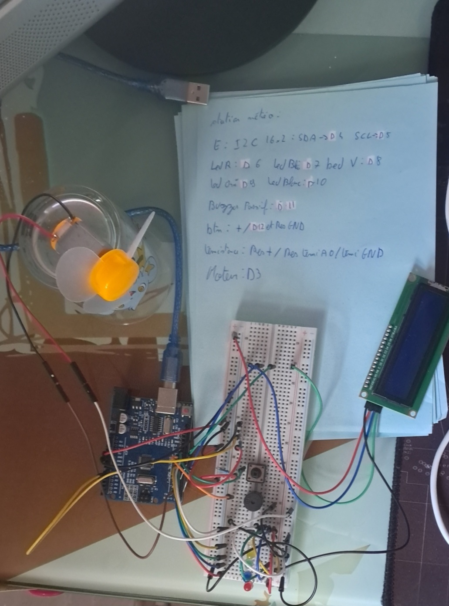

Station Météo Arduino
Un projet de station météo développée avec Arduino et une thermistance
À propos du Projet
Ce projet consiste en une station météo réalisée avec une carte Arduino. Elle mesure la température à l'aide d'une thermistance en pont diviseur et commande un ventilateur de refroidissement selon le seuil détecté, avec affichage des informations sur un écran LCD.
Caractéristiques
- Mesure de température via thermistances NTC
- Commande de ventilateur configurable
- Affichage sur écran LCD I2C
- Transmission des données via port série
- Carte Arduino Uno
- Thermistance NTC 10k en pont diviseur
- Écran LCD I2C 16x2
- Ventilateur 5V + transistor (ou module MOSFET)
- Câbles et breadboard
- Arduino IDE
- C/C++ pour Arduino
- Bibliothèques LiquidCrystal_I2C
Matériel Nécessaire
Technologies utilisées
Télécharger le Code Arduino
Téléchargez le fichier source Arduino de la station météo :
📥 Télécharger station_meteo.ino💾 Fichier Arduino | 📄 ~1 KB | Compatible Arduino IDE

Photo de la station météo Arduino (thermistance + ventilateur).